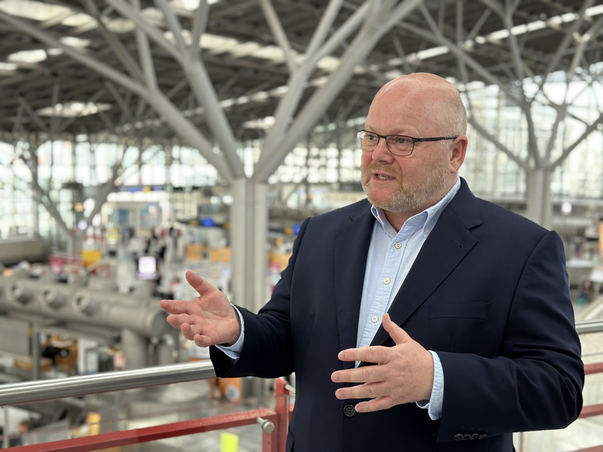

Über mich
Ralf M. Ruthardt
Autor, Herausgeber, Startup-Unternehmer. Im Zentrum steht der Mensch.

Ich schreibe über Menschen, Gesellschaft und die Frage, wie wir miteinander leben wollen. In meinen Romanen, Kurzgeschichten und Essays interessieren mich nicht die einfachen Antworten, sondern die Spannungsfelder: Freiheit und Verantwortung, Nähe und Entfremdung, Meinung und Schweigen, technologischer Fortschritt und seine Nebenwirkungen.
Als Autor verbinde ich erzählerische Formen mit gesellschaftlicher Beobachtung. Meine Bücher greifen Themen auf, die viele Menschen bewegen: politische Polarisierung, persönliche Krisen, Freundschaft, gesellschaftliche Verantwortung und die Suche nach Orientierung in einer komplexer werdenden Welt. Dabei geht es mir nicht darum, zu belehren. Mich interessiert der Perspektivwechsel: das genaue Hinsehen, das Aushalten von Ambivalenz und die Möglichkeit, wieder miteinander ins Gespräch zu kommen.
Aus diesem Anliegen heraus ist das Magazin mitmenschenreden entstanden. Es steht für Perspektivenwechsel und für den konstruktiven Dialog. Als Herausgeber möchte ich Stimmen sichtbar machen, die etwas zu sagen haben: aus unterschiedlichen Milieus, Berufen, Generationen und Haltungen. Ein Raum für Argumente, Erfahrungen und ernsthafte Gespräche, jenseits der Hektik sozialer Netzwerke.
Geprägt wurde mein Blick auf Gesellschaft auch durch meine frühere Tätigkeit als Unternehmer. Rund drei Jahrzehnte war ich in den Bereichen Digitalisierung, Prozessautomatisierung, künstliche Intelligenz und Innovationsmanagement tätig. Ich habe mehrere Startups auf den Weg gebracht, Verantwortung getragen, Chancen genutzt und Konflikte erlebt. Diese Jahre haben mein Verständnis für Führung, Technologie und wirtschaftliche Realität geschärft.
Heute fließt diese Erfahrung in mein publizistisches Arbeiten ein. Ich kenne die Welt der Technik und der Wirtschaft nicht nur aus der Beobachtung, sondern aus der Praxis. Gerade deshalb interessieren mich die Folgen von Veränderung: Was macht technischer Fortschritt mit Menschen? Was geschieht, wenn Sprache verroht oder Vertrauen schwindet? Und wie können wir trotz unterschiedlicher Überzeugungen im Gespräch bleiben?
Meine Arbeit als Autor und Herausgeber ist deshalb kein Bruch mit meiner unternehmerischen Vergangenheit, sondern eine Fortsetzung mit anderen Mitteln. Früher ging es um Prozesse, Innovationen und Organisationen. Heute geht es stärker um Sprache, Wahrnehmung und gesellschaftliche Verständigung.
Verlag: Edition PJB